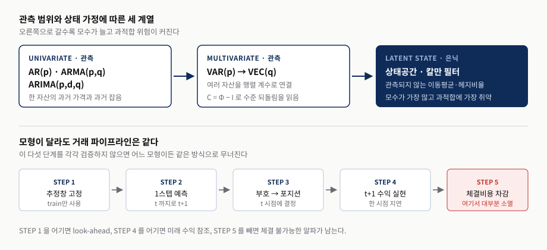
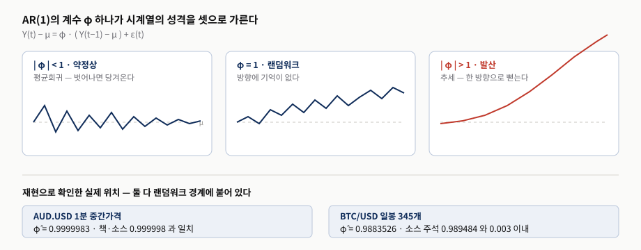
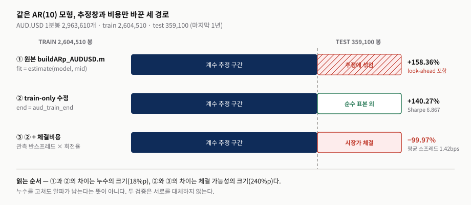
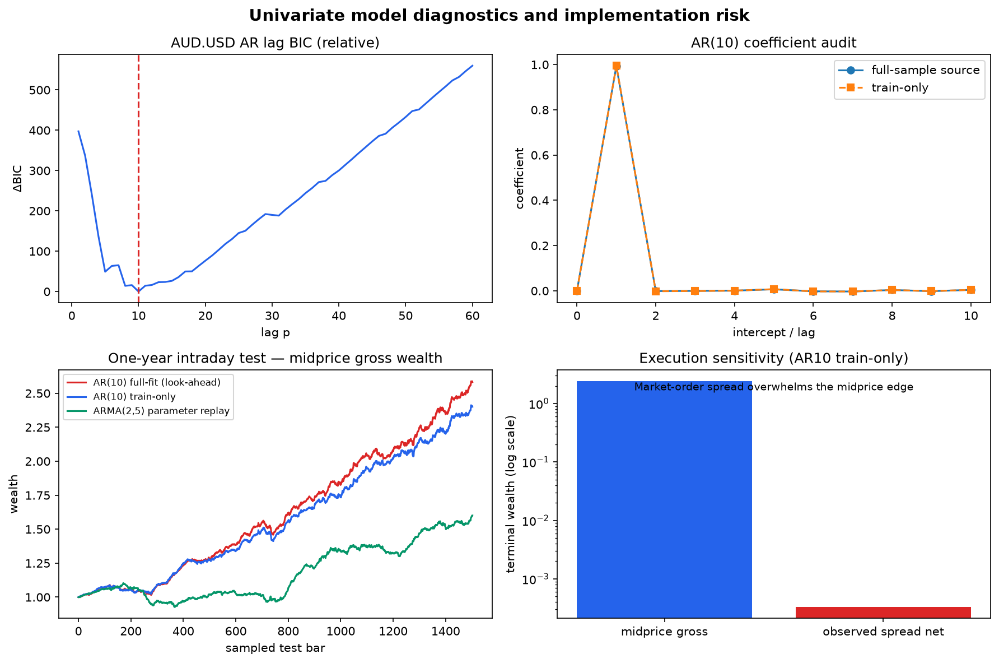
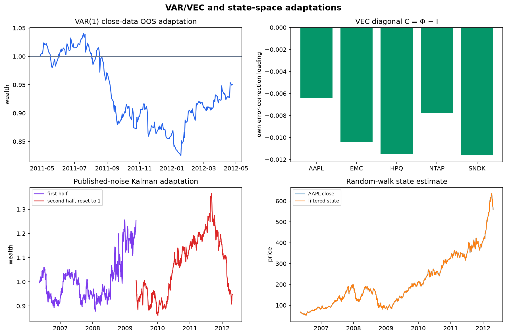
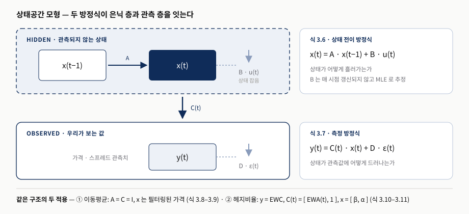
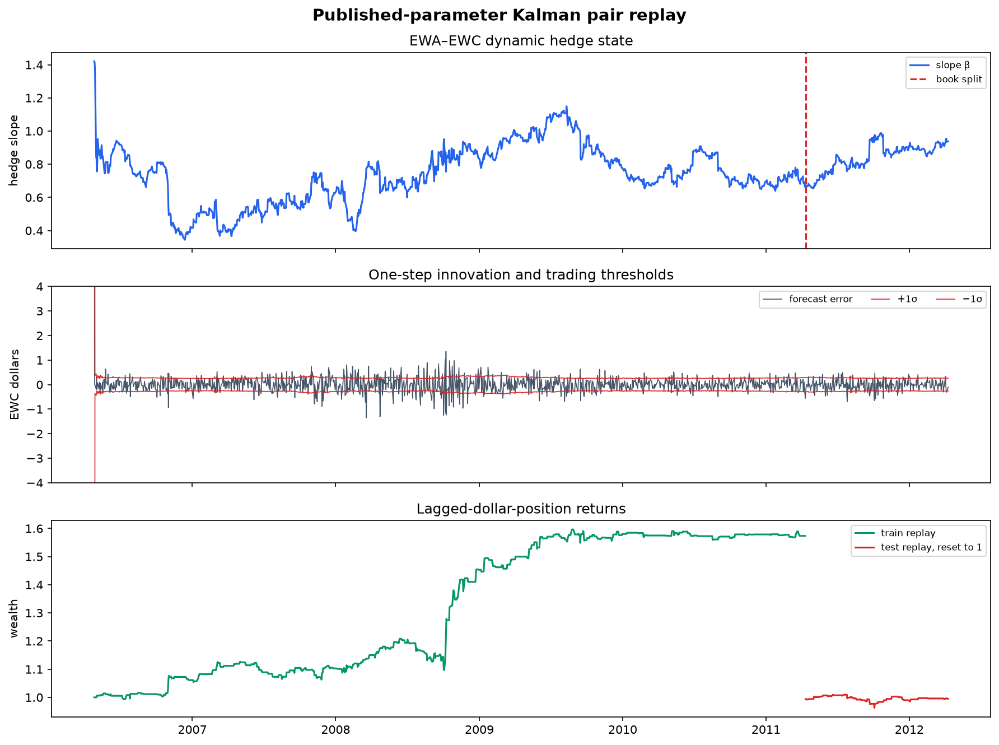

Chapter 3. 시계열 분석 (Time-Series Analysis)
AR에서 칼만 필터까지 — 예측을 체결 가능한 포지션으로 바꾸는 법
0. 핵심 요약
이 리포트는 Ernest P. Chan의 Machine Trading (2017) 제3장 「Time-Series Analysis」를 재구성하고, 저자가 배포한 공식 Book 3 ZIP을 Python으로 다시 실행한 재현 감사 결과를 함께 싣는다. 3장은 AR(p) · ARMA(p,q) · ARIMA(p,d,q) · VAR(p) · VEC(q) · 상태공간 모형(칼만 필터)이라는 여섯 개 모형 계열을 훑는다. 저자의 태도는 일관되게 실무적이다 — 이론의 내부를 파헤치지 않고 기성 패키지(MATLAB Econometrics Toolbox)로 예측을 만들어 거래에 쓰는 데만 집중한다.
그런데 원자료를 다시 실행해 보면 장의 대표 수치인 AUD.USD AR(10) 전략의 연환산 158%가 두 개의 서로 다른 이유로 무너진다. 첫째, 공식 소스 buildARp_AUDUSD.m은 trainset 변수를 선언해 두었지만 실제 적합 줄이 fit = estimate(model, mid)여서 테스트 구간까지 포함한 전체 표본으로 계수를 추정한다. 둘째, 그 누수를 고쳐도 실제 관측된 반스프레드를 시장가 비용으로 차감하면 터미널 자산이 거의 0이 된다. 이 두 진단은 서로를 대체하지 않는다. 이 리포트가 발표에서 전달하려는 것은 여섯 모형의 목록이 아니라, 어느 모형을 쓰더라도 반복해야 할 이 검증 절차다.
- 추정창 — 계수를 어디까지의 데이터로 적합했는가? 원본 코드가
trainset을 선언하고도 쓰지 않았다면 그 성과는 무엇을 뜻하는가? - 체결 — 중간가격(midprice) 백테스트의 알파는 실제 호가 스프레드를 통과하는가? 통과하지 못하면 어떤 실행 인프라가 전제되는가?
- 입력 경계 — 책의 CRSP 중간가·Compustat 산업분류가 없을 때, 다른 데이터로 얻은 숫자를 "재현"이라고 부를 수 있는가?
| 모형 계열 | 핵심 질문 | 교재의 주장 | 재현 감사 뒤의 판단 |
|---|---|---|---|
| AR(1) · 정상성 | 가격 시계열은 평균회귀하는가? | AUD.USD의 $\phi$는 0.99997로 약정상이지만 사실상 랜덤워크에 가깝다. | $\hat\phi = 0.9999983$으로 소스와 일치. 계수가 1에 붙어 있다는 사실 자체가 "예측 가능성"과 "경제적 정상성"을 구분하라는 경고다. |
| AR(p) · BIC | 차수 $p$를 어떻게 정하고 그 성과는 얼마인가? | BIC가 $p=10$을 고르고, 표본외 연환산 수익 158%를 낸다. | BIC의 $p=10$ 선택과 표 3.1 계수는 5e-6 이내로 재현된다. 그러나 158%는 전체표본 적합에서 나온 값이다. train-only로 고치면 140.27%, 체결비용까지 반영하면 −99.97%다. |
| ARMA(p,q) | 잡음의 기억을 더하면 더 나아지는가? | BIC가 (2,5)를 고르고 시차는 줄지만 표본외 수익은 158%에서 60%로 떨어진다. | 계수 기반 replay로 60.08%를 재현(책 60.22%)했다. 모형의 간결함이 곧 성과가 아니라는 저자의 결론은 그대로 유효하다. |
| ARIMA(p,d,q) | 왜 수익률이 아니라 가격을 모델링하는가? | $\Delta Y$의 ARMA는 항상 $Y$의 ARMA로 바꿀 수 있지만 그 역은 성립하지 않는다. $Y$ 모델이 더 유연하다. | 등식 대응을 코드로 확인했다. AUD.USD 로그가격은 (1, 1, 9)로 오히려 간결해지지 않아, 저자의 "더 짧아지는 경우를 본 적 없다"는 관찰과 일치한다. |
| VAR(p) · VEC(q) | 여러 종목을 함께 모델링하면 무엇이 좋아지는가? | 컴퓨터 하드웨어 5종목 VAR(1) + 섹터 중립 배분으로 연 48%, 샤프 0.9를 낸다. | 공식 close 패널로는 −4.97% / 샤프 −0.27이다. 책의 CRSP 중간가와 point-in-time 산업분류가 번들에 없으므로 직접 비교 대상이 아니다. VEC의 $C = \Phi - I$ 항등식은 코드로 검증했다. |
| 상태공간 · 칼만 | 관측되지 않는 이동평균·헤지비율을 추정할 값어치가 있는가? | 하드웨어 5종목 SSM은 학습 40.8%, 테스트 −0.38%로 과적합이 놀라울 만큼 크다. EWA–EWC 동적 헤지비율은 학습 구간 후반부터 곡선이 평평해진다. | 과적합 결론은 재현 적응에서도 같은 방향으로 나타났다(하드웨어 학습 7.90% → 테스트 −1.77%, 페어 학습 9.57% → 테스트 −0.53%). 다만 책의 MLE를 다시 적합한 것이 아니라 인쇄된 계수를 replay한 값이다. |
1. 왜 시계열 분석인가 — 정상성과 모형 지도
- 시계열 기법은 펀더멘털 정보나 직관이 없는 시장에서 가장 먼저 꺼내는 도구다. 통화와 비트코인이 대표적이다.
- 여섯 모형은 관측 범위(단변량 → 다변량)와 상태 가정(관측 → 은닉)의 두 축으로 정렬된다. 오른쪽으로 갈수록 모수가 늘고 과적합 위험이 커진다.
- AR(1)의 계수 $\phi$ 하나가 시계열 성격을 평균회귀 / 랜덤워크 / 발산 셋으로 가른다.
- 거래 가격 대신 중간가격을 쓰는 이유는 호가 반등이 만드는 허상적 평균회귀를 걷어내기 위해서다. 이 선택이 뒤에서 체결비용 문제로 되돌아온다.
경제학자와 전기공학자가 오래 다듬어 온 "다음 신호를 예측하는" 문제는 트레이더가 매일 하는 일과 같다. 저자는 이 도구들이 특히 빛나는 곳으로 펀더멘털 정보가 단기 예측에 쓸모없는 시장을 든다. Lyons(2001)의 "우리의 교과서적 모델이 설명할 수 있는 월간 환율 변화의 비율은 본질적으로 0이다"라는 문장이 그 배경으로 인용된다. 이 장의 실행 예제가 대부분 AUD.USD 1분봉인 것도 그 때문이다.
중요한 것은 여섯 모형을 병렬로 늘어놓는 대신 무엇이 늘어나는지로 읽는 것이다. AR에서 ARMA로 가면 잡음의 기억이 추가되고, VAR로 가면 자산 간 횡단면 관계가 추가되고, 상태공간으로 가면 관측되지 않는 상태 변수 자체가 추가된다. 추가되는 것은 언제나 추정해야 할 모수이고, 저자가 장의 요약에서 못박듯 "선형이라고 해서 만만한 것은 아니다. 과적합이 늘 도사리는 위험"이다.

발표자 재구성. 모형 계열 구분은 3장 본문(AR·ARMA·ARIMA → VAR·VEC → 상태공간)의 서술 순서를, 아래 다섯 단계는 재현 리포트가 "재사용할 절차"로 정리한 추정창 → 1-step forecast → lagged position → 체결비용 → 표본 외 평가를 도식화한 것이다. 책에 같은 그림은 없다.1.1 AR(1)과 정상성의 세 국면
가장 단순한 모형인 AR(1)은 한 막대의 가격을 다음 막대의 가격과 잇는 선형 회귀다.
$\mu$는 장기 평균 수준, $\phi$는 어제의 이탈이 오늘로 이어지는 정도, $\varepsilon(t)$는 평균 0의 가우스 잡음이며 예측할 수 없는 새 충격이라는 뜻에서 혁신(innovation)이라 부른다. 시계열의 평균과 분산이 시간에 따라 일정하면 약정상(weakly stationary)이라 하고, AR(1)은 $|\phi| < 1$일 때 약정상이 된다. 약정상 시계열은 동시에 평균회귀한다. $\phi = 1$이면 어제 값에 잡음만 더해지는 랜덤워크이고, $|\phi| > 1$이면 한 방향으로 발산한다.
저자가 2007-07-24부터 2015-08-03까지의 AUD.USD 1분 중간가격에 MATLAB estimate를 적용해 얻은 값은 $\phi = 0.99997$(표준오차 0.00001)이다. 재현에서는 조건부 OLS로 $\hat\phi = 0.9999983$을 얻어 소스 주석의 0.999998과 일치했고, 비트코인 일봉 345개에서는 $\hat\phi = 0.9883526$으로 소스 주석 0.989484와 0.003 이내였다. 두 값 모두 1에 붙어 있다. 여기서 읽어야 할 것은 "약정상이다"라는 판정이 아니라, 그 판정이 경제적으로 거래 가능한 평균회귀를 뜻하지 않는다는 사실이다.

발표자 재구성. 세 경로는 식 3.1의 성질을 설명하기 위해 그린 개념도이며 실제 가격 데이터가 아니다. 아래 두 계수는 공식 Book 3 ZIP 데이터에 대한 Python 조건부 OLS 재현값이고 각각 소스 주석값과 대조했다.1.2 중간가격을 쓰는 이유와 그 대가
저자는 검정을 실제 거래 가격이 아니라 중간가격으로 수행했다. 거래 가격은 매수 호가와 매도 호가 사이를 튀어 다니는데(bid–ask bounce) 이 튐 자체가 실제로는 거래할 수 없는 허상적 평균회귀를 만들기 때문이다. 특히 거래가격에 나타나는 음의 1차 자기상관은 진짜 평균회귀가 아니라 호가 반등일 수 있다.
이 선택은 통계적으로 옳지만 대가를 남긴다. 중간가격으로 만든 신호를 실제로 실현하려면 중간가격에 체결할 수 있어야 하고, 그러려면 지정가 주문을 관리하는 저지연 실행 프로그램이 필요하다. 저자도 158% 결과를 소개한 직후 이 전제를 명시한다. 재현 감사는 이 전제를 정량화했다 — AUD.USD 데이터의 평균 full spread는 1.4241bps이고, 시장가 주문만 쓴다고 가정해 관측 반스프레드를 회전율에 곱해 차감하면 전략의 부호가 뒤집힌다. 이는 저자가 연습문제 3.2로 남긴 질문("같은 전략을 시장가 주문으로 백테스트하면 CAGR은 얼마인가?")에 대한 답에 해당한다.
중간가격은 측정을 깨끗하게 만들지만 체결을 보장하지 않는다. 1장에서 다룬 실행 인프라(저지연·지정가 관리)가 없다면 3장의 분봉 전략은 종이 위의 수치로 남는다. 두 장을 이어 읽어야 하는 지점이다.
2. 단변량 모형 — AR·ARMA·ARIMA와 158%의 정체
- BIC는 시차 1–60을 전수 탐색해 $p=10$을 고른다. 이 선택과 표 3.1의 11개 계수는 5e-6 이내로 재현된다.
- 그러나 공식 소스는
trainset을 선언한 뒤 전체표본으로 적합한다. 158%는 테스트 구간이 계수 추정에 섞인 값이다. - train-only로 고친 진짜 표본외 수익은 140.27%(샤프 6.867). 관측 반스프레드를 차감하면 −99.97%다.
- ARMA(2,5)는 시차를 10에서 7로 줄이지만 수익은 60%로 떨어진다. 간결함이 성과를 보장하지 않는다.
- ARIMA의 $d=1$은 가격을 수익률로 바꾸는 연산이다. $Y$ 모델이 $\Delta Y$ 모델보다 유연하며 그 역변환은 일반적으로 성립하지 않는다.
2.1 AR(p)와 BIC 차수 선택
AR(1)을 $p$개 시차로 일반화하면 결국 하나의 다중 회귀가 된다.
차수 $p$가 새 매개변수로 생겼으므로 데이터에 가장 맞는 값을 찾아야 한다. 저자는 베이즈 정보 기준(BIC)을 쓴다. BIC는 음의 로그가능도에 비례하되 $p$에 비례하는 복잡성 벌점을 더하므로, 시차를 무작정 늘리는 과적합을 막는다. 후보 1–60을 전수 탐색해 최소 BIC를 찾고, 그 $p$로 계수를 추정한다. AUD.USD에서는 $p = 10$이 선택되며 계수는 책의 표 3.1이 된다.
예측과 신호 생성은 단순하다. 시점 $t$까지의 가격만으로 $t+1$을 예측하고(forecast(fit, 1, 'Y0', ...)), 예측 가격이 현재보다 높으면 +1, 낮으면 −1로 포지션을 잡는다. 여기에는 저자가 명시한 시간 규약이 있다 — yF(t)는 시점 $t$까지의 데이터로 만든 예측이므로 실제로는 $t+1$의 가격에 대한 예측이고, 수익은 position[t] × return[t+1]로 실현된다. 이 한 시점 지연이 그림 1의 STEP 3–4에 해당한다.
2.2 추정창 오염 — 원본 코드의 look-ahead
문제는 그 추정창이다. 공식 buildARp_AUDUSD.m에는 trainset이 선언되어 있지만 실제 적합 줄은 fit = estimate(model, mid);다. mid는 전체 표본이므로 테스트 구간의 가격이 계수 추정에 포함된다. 이 경로를 그대로 실행하면 연환산 수익이 1.583648로 책의 1.584085와 0.005 이내로 일치하고, 표 3.1의 11개 계수도 5e-6 이내로 맞는다.
여기서 재현이 성공했다는 사실의 의미를 정확히 새길 필요가 있다. 일치는 전략이 유효하다는 증거가 아니라, 누수가 포함된 경로를 정확히 찾아냈다는 증거다. 계수를 추정 구간만으로 다시 적합하면(end = aud_train_end) 계수가 유의하게 달라지고 진짜 표본외 연환산 수익은 1.402665, 샤프는 6.867이 된다. 18%p 차이가 누수의 크기다.

발표자 재구성. 세로 점선은 AUD.USD 1분봉 2,963,610개를 학습 2,604,510 / 테스트 359,100(마지막 1년)으로 나눈 경계다. 세 수치는 모두 Python 재현값이며, ①은 공식buildARp_AUDUSD.m의 적합 경로를 그대로 따른 결과다. 책에 같은 그림은 없다.
2.3 체결비용이라는 두 번째 관문
누수를 고친 140.27%도 살아남지 못한다. 관측된 반스프레드에 포지션 회전율을 곱해 시장가 비용으로 차감하면 연환산 수익은 −0.999670, 즉 터미널 자산이 거의 0이 된다. ARMA(2,5) 경로에서도 같은 처리를 하면 −1.000000에 수렴한다. 분봉 전략의 보유기간이 짧을수록 회전율이 높고, 1.42bps의 스프레드가 매 회전마다 부과되기 때문이다.
재현 리포트는 이 비용 처리에 명시적 경계를 둔다 — AUD는 실제 관측된 반스프레드를 쓰고, 일봉 전략(VAR·칼만)은 편도 2bps 민감도만 계산한다. 시장충격(market impact), 지연(latency), 대차 수수료는 어느 경로에도 포함하지 않았다. 따라서 위 −99.97%는 최악의 하한이 아니라 "스프레드만으로도 이미 부호가 뒤집힌다"는 하나의 관문이다.

출처: 교재 저장소의 Chapter 3 재현 실행 산출물src/reports/figures/ar_diagnostics.png. 발표를 위해 크기만 옮겼고 데이터·축·주석은 재현 스크립트가 생성한 그대로다. 읽는 순서는 왼쪽 위(차수 선택) → 오른쪽 위(계수가 실질적으로 AR(1)에 가깝다) → 왼쪽 아래(세 경로의 자산곡선) → 오른쪽 아래(체결비용 반영). 오른쪽 아래 패널은 로그 축이므로 막대 높이 차이를 선형으로 읽지 않는다.
2.4 ARMA(2,5) — 시차를 줄여도 성과는 준다
AR(p)에서 시차가 10개나 필요했던 것은 모형 구조가 단순한 탓을 항의 개수로 보완하려 든 결과다. 과거 잡음 $q$개를 더한 ARMA(p,q)는 필요한 시차를 줄여 준다.
$p$와 $q$ 두 축을 이중 for 루프로 전수 탐색해 BIC를 최소화하면 AUD.USD에서는 $(p, q) = (2, 5)$가 선택된다. 총 시차는 10에서 7로 줄고, 무엇보다 $|\phi_1| = 0.649$로 확실히 1보다 작아져 강한 평균회귀를 나타낸다. 통계적으로는 더 나은 모형이다. 그런데 같은 방식으로 신호를 만들면 표본외 연환산 수익은 158%에서 60%로 떨어진다.
재현에서는 책 표 3.2의 계수를 그대로 넣고 MATLAB forecast와 동일하게 미래 혁신을 0으로 두어 0.600793을 얻었다(책 0.602165). 과거 잔차를 임의로 재귀시키는 다른 구현은 같은 모형이 아니므로 쓰지 않았다. 이 경로는 계수를 전체 자료에서 얻은 published-parameter replay이며 새로운 표본외 추정 성과가 아니라는 점을 분명히 해 둔다.
| 경로 | 재현 등급 | Python 연환산 | 책 연환산 | 샤프 | MDD | 비용 반영 후 |
|---|---|---|---|---|---|---|
| AR(10) 전체표본 적합 공식 소스 경로 |
수치 재현 + 누수 진단 | +158.36% | +158.41% | 7.431 | −7.34% | −99.96% |
| AR(10) train-only 수정 진짜 표본외 |
수정된 표본외 변형 | +140.27% | — (책에 없음) | 6.867 | −7.08% | −99.97% |
| ARMA(2,5) 계수 replay | published-parameter replay | +60.08% | +60.22% | 3.716 | −16.02% | −100.00% |
| ARIMA(1,1,9) 로그가격 | 수식 대응 + 소스 출력 비교 | 성과곡선을 만들지 않았다 — 전체표본으로 차수를 다시 고르는 선택편향을 추가하지 않기 위해서다. | — | |||
표 2에서 눈여겨볼 칸은 마지막 열이다. 세 경로의 중간가격 성과는 158%에서 60%까지 크게 다르지만, 체결비용을 반영하면 셋 다 −100%에 수렴한다. 모형 선택의 차이가 실행 비용의 차이 앞에서 무의미해지는 구조이며, 이것이 이 장에서 발표로 가져갈 가장 중요한 대조다.
2.5 ARIMA(p, d, q) — 왜 수익률이 아니라 가격을 예측하는가
ARIMA는 자기회귀 누적 이동평균이다. $Y(t)$가 ARIMA($p$, 1, $q$)라면 그 차분 $\Delta Y(t)$가 ARMA($p$, $q$)라는 뜻이다. $Y$를 로그 가격으로 두면 이해가 쉽다 — 로그 수익률을 ARMA($p$, $q$)로 모델링하는 것이 로그 가격을 ARIMA($p$, 1, $q$)로 모델링하는 것과 동등해진다. $d = 1$이라는 "차분 한 번"이 곧 가격을 수익률로 바꾸는 연산이고, 그래서 함수 이름에 integrated의 I가 들어 있다.
그렇다면 수익률을 모델링하는 편이 유리할까? 저자는 혼동하기 쉬운 지점을 못박는다. "로그가격의 ARIMA($p$,1,$q$) = 로그수익률의 ARIMA($p$,0,$q$)"는 참이지만, "로그가격의 ARMA($p$,$q$) = 로그수익률의 어떤 ARMA($p'$,$q'$)"는 거짓이다. $\Delta Y$의 ARMA는 독립변수로 $\Delta Y$만 가질 수 있는데, $Y$의 ARMA는 $\Delta Y$(두 $Y$의 차이일 뿐이므로)와 $Y$를 모두 가질 수 있다. 즉 $Y$ 모델이 더 유연하고, 변환은 한 방향으로만 성립한다. $\Delta Y$ 모델에 $Y$까지 넣고 싶다면 그것이 바로 다음 절의 VEC 모형이다.
실무적 이득이 있느냐는 별개다. 시차가 줄어들면 유리하겠지만 저자는 그런 경우를 본 적이 없다고 적는다. AUD.USD 로그가격을 ARIMA로 모델링하면 $(p, q) = (1, 9)$가 나와 총 10개로 오히려 간결해지지 않는다. 재현에서는 이 등식 대응과 소스 출력을 확인하는 데서 멈추고 별도 성과곡선을 만들지 않았다 — 결과를 본 뒤 전체표본에서 차수를 다시 고르면 다중검정 편향이 더해지기 때문이다.
3. 다변량 모형 — VAR(p), 섹터 중립, VEC(q)
- VAR(p)는 AR(p)의 계수를 $m \times m$ 행렬로 올리고, 잡음의 횡단면 상관은 허용하되 시계열 상관은 0으로 둔다.
- 공식 close 패널에서도 BIC는 책과 같이 $p = 1$을 고른다. 단순한 모형이 보통 더 좋다는 저자의 관찰이 재현된다.
- 섹터 중립 배분(식 3.4)은 예측 수익의 산업군 평균 대비 이탈에 비례해 배분하고 절대노출 합을 1로 정규화한다.
- VEC(q)의 오차수정 행렬은 VAR(1)에서 $C = \Phi - I$이며, 이 항등식을 코드로 자동 검증했다.
- 책의 48% / 샤프 0.9와 재현의 −4.97% / −0.27은 비교 대상이 아니다. 입력 데이터와 종목 유니버스가 다르다.
여러 가격을 벡터 $y_t$로 묶으면 자기회귀는 행렬 계수로 일반화된다.
필요한 변경은 두 가지다. 자기회귀 계수 $\Phi$를 $m \times m$ 행렬로 해석하고, $m$-벡터 잡음 $\varepsilon$이 0이 아닌 횡단면 상관은 갖되 0의 시계열 상관을 갖도록 허용하는 것이다. 풀어 쓰면, 서로 다른 시점 사이에서는 잡음끼리 무관하지만 같은 시점의 종목들끼리는 함께 움직일 수 있다는 뜻이다. 이 구조 덕분에 VAR은 같은 산업군 주식처럼 수익률이 서로 얽힌 상품군에 잘 맞는다.
저자가 고른 대상은 2007-01-03 기준 S&P 500의 컴퓨터 하드웨어 그룹(AAPL, EMC, HPQ, NTAP, SNDK)이며, 호가 반등을 없애기 위해 CRSP가 제공한 장 마감 중간가격을 2007-01-03부터 2013-12-31까지 사용한다. 처음 6년을 학습 세트로 두고 BIC로 차수를 고르면 $p = 1$이 선택된다.
3.1 섹터 중립 배분과 그 의미
VAR의 선형성에 맞춰 트레이딩 규칙도 선형으로 짤 수 있고, 나아가 섹터 중립으로 만들 수 있다. 매일 산업군 전체의 평균 예측 수익률 $\langle r \rangle$을 구한 뒤, 각 종목의 배분을 그 평균으로부터의 이탈에 비례하게 둔다.
분자는 종목 $i$의 예측 수익률이 산업군 평균에서 얼마나 벗어났는가이고(평균보다 좋으면 매수, 나쁘면 매도), 분모는 모든 이탈의 절댓값 합으로 전체 규모를 정규화한다. 그 결과 포트폴리오의 초기 총 시장가치는 항상 \$1이 된다.
저자는 이 식이 Chan(2013)의 식 4.1과 비슷해 보이지만 다르다고 명시한다. 이전 저서의 식은 전일 실현 수익률을 쓰고 평균회귀를 가정해 비례상수를 −1로 놓았다. 여기서는 예측 수익률을 그대로 쓰고 부호를 뒤집지 않는다. 재현에서는 normalized_sector_positions가 같은 날 섹터 평균을 빼고 절대노출 합을 1로 만드는지를 계약 불변식으로 자동 검증한다.
3.2 VEC(q)와 오차수정 행렬
우리는 종종 가격 $Y$보다 가격의 변화 $\Delta Y$를 예측하고 싶다. VAR(p)는 $\Delta Y$를 종속변수로, 여러 지연된 $\Delta Y$와 $Y$를 독립변수로 갖는 모형으로 변환할 수 있고, 이것이 VEC(q)(벡터 오차수정)다.
핵심은 $Y(t-1)$ 앞의 $m \times m$ 행렬 $C$, 즉 오차수정 행렬이다. 어제의 가격 수준이 오늘의 가격 변화를 어느 방향으로 얼마나 끌어당기는지를 담는다. VAR(1)의 경우 $q = p - 1 = 0$이고 $C = \Phi - I$가 성립하며, 재현 코드는 두 행렬의 동일성을 매 실행마다 검증한다.
$C$의 대각 원소가 음수라는 것은 그 종목이 자기 자신에 대해 평균회귀적이라는 신호다. 책의 표 3.4에서는 NTAP만 양수(+0.0066)이고 나머지 넷이 음수여서 저자는 "NTAP를 빼면 모든 대각 원소가 음수"라고 적는다. 공식 close 패널로 다시 계산한 재현에서는 다섯 대각 원소가 모두 음수로 나왔다. 방향은 같지만 값이 다르며, 이는 입력 데이터가 다르기 때문이다.
여기서 과잉 해석을 경계해야 한다. 저자도 예측을 위해 VEC를 쓰는 데 공적분 포트폴리오가 꼭 필요하지는 않다고 밝힌다. 재현 리포트는 한 걸음 더 나아가 대각 원소가 모두 음수라는 사실만으로 공적분 순위가 증명되지 않는다고 못박는다. Johansen 검정은 결정론적 항, 시차, 표본기간 선택에 민감하고, 좋은 성과를 보장하지도 않는다.
| 항목 | 책 (CRSP 중간가, 2007–2013) | 재현 (공식 close 패널, 2006–2012) | 차이의 원인 |
|---|---|---|---|
| BIC 선택 차수 | $p = 1$ | $p = 1$ (BIC −1880.28로 최소) | 일치 — 단순한 모형 선호가 데이터에 견고하다. |
| $C$ 대각 (AAPL / EMC / HPQ / NTAP / SNDK) | −0.0082 / −0.0291 / −0.0344 / +0.0066 / −0.0013 | −0.0064 / −0.0104 / −0.0115 / −0.0078 / −0.0116 | 부호 방향은 대체로 같으나 NTAP가 뒤집힌다. 중간가 대신 종가를, 다른 기간을 썼다. |
| 표본외 연환산 수익 | +48% | −4.97% | 직접 비교 금지. 책은 7개 CRSP 중간가와 point-in-time 산업분류를 쓰지만 공식 ZIP의 무결 close 패널에는 5개 종목만 있다. |
| 샤프 비율 | 0.9 | −0.27 | 같은 이유. 재현 등급은 "수치 재현"이 아니라 방법론적 적응이다. |
| 편도 2bps 비용 반영 | — (책에 없음) | −5.25% (일평균 회전율 0.0577) | 일봉·저회전 전략이라 분봉과 달리 비용 영향이 작다. |

출처: 교재 저장소의 Chapter 3 재현 실행 산출물src/reports/figures/multivariate_diagnostics.png. 오른쪽 아래 패널이 이 절과 다음 절을 잇는 핵심이다 — 필터링된 가격이 관측 가격과 0.1% 미만으로 겹치므로, 다음 날 예측도 오늘 가격과 거의 같아진다. 왼쪽 위·왼쪽 아래 곡선은 공식 close 패널에 대한 방법론적 적응 결과이며 책의 그림 3.3–3.5와 같은 데이터가 아니다.
4. 상태공간 모형과 칼만 필터 — 은닉 변수를 다루는 값
- AR·VAR과 달리 상태공간 모형은 관측되지 않는 은닉 상태를 도입한다. 상태 전이(식 3.6)와 측정(식 3.7) 두 방정식으로 기술된다.
- 이동평균을 은닉 상태로 보는 것이 첫 적용이다. "표준적이고 유일한 이동평균"에 아무도 합의할 수 없다는 사실이 그 근거다.
- 하드웨어 5종목 적용은 학습 40.8% → 테스트 −0.38%로 무너진다. 추정한 것이 잡음 분산뿐인데도 과적합이 크다.
- 둘째 적용은 헤지비율을 은닉 상태로 두는 것이다. EWC를 관측값, $[EWA, 1]$을 시간가변 측정행렬로 재배치한다.
- 페어 replay도 학습 9.57% / 샤프 1.24 → 테스트 −0.53% / −0.13으로 같은 방향으로 약해진다. 레짐 변화이거나 $B$ 과적합이다.
앞의 네 모형은 모두 관측 가능한 변수(여러 지연 시점의 가격)만으로 미래를 예측했다. 계량경제학자들은 여기서 한 걸음 더 나아가 상태(states)라 불리는 은닉 변수를 품은 모형 부류를 만들었다. 은닉 변수는 직접 보이지 않지만 관측 잡음의 영향을 받으며 관측 변수의 값을 결정한다. 이런 모형이 상태공간 모형(SSM)이고, 그 선형 예가 칼만 필터다.
식 3.6은 상태 전이 방정식으로 보이지 않는 상태가 어떻게 흘러가는지를, 식 3.7은 측정 방정식으로 그 상태가 우리가 보는 값에 어떻게 드러나는지를 기술한다. $u$와 $\varepsilon$은 모두 평균 0, 분산 1의 백색잡음이고, $B$와 $D$가 각 잡음이 얼마나 섞여 드는지를 정한다. 저자는 $B$가 "관측 가능"하다고 말하면서 곧 조건을 붙인다 — 실제로는 학습 데이터에 MLE를 적용해 추정할 미지 모수이며, 칼만 필터 갱신 과정에서 매 시점 갱신되지 않는다는 의미에서만 관측 가능하다.

발표자 재구성. 식 3.6·3.7의 구조와 3장이 제시한 두 적용(식 3.8–3.9의 이동평균, 식 3.10–3.11의 헤지비율)을 하나의 도해로 묶은 것이며 책에 같은 그림은 없다. 두 적용이 같은 골격을 공유한다는 점이 이 절의 핵심이다.4.1 이동평균을 은닉 상태로 — 하드웨어 5종목
왜 굳이 은닉 변수를 가정하는가? 저자의 답은 이동평균이다. 우리는 보통 고정된 개수의 지연 가격으로 이동평균을 계산하므로 겉보기에 관측 가능해 보인다. 그런데 "그 고정된 지연 개수"는 인위적 약속에 불과하고, 단순 대신 지수 이동평균을 쓸 이유도 충분하다. 표준적이고 유일한 이동평균이 무엇인지 아무도 합의할 수 없다는 사실 자체가 이동평균을 은닉 변수로 취급해도 좋다는 신호다.
구조를 부여하기 위해 $A$를 항등행렬로 두면 상태는 어제 값에 잡음만 더해져 흘러가고, 관측 가격은 그 이동평균에 측정 잡음을 더한 값이 된다.
대상은 VAR 절과 같은 하드웨어 5종목이고, 은닉 상태 수도 5로 둔다. 각 가격이 저마다 독립적인 이동평균을 갖는다는 전형적 가정이다. $B$와 $D$는 미지 모수를 가진 $5 \times 5$ 대각행렬로 두는데, 여기에는 명확한 이유가 있다 — 무상관 제약을 풀면 추정할 변수가 훨씬 늘어 최적화 시간이 폭증하고 과적합 위험도 커진다. 제약은 답답해 보여도 모형을 다룰 수 있게 지켜 주는 안전장치다.
결과가 이 절의 교훈이다. 이 모형이 만드는 필터링된 가격은 관측 가격과 매우 비슷해 보통 차이가 0.1%도 안 되고(그림 5 오른쪽 아래), 따라서 다음 날 예측도 오늘 가격과 거의 같아진다. 그런데도 학습 세트 누적 수익은 근사한 곡선을 그리다 표본외에서 무너진다. 책 기준 학습 CAGR 40.78%(샤프 1.85) → 테스트 −0.38%(샤프 0.05)다. 저자의 표현대로 "학습 데이터로는 그저 상태·측정 잡음의 분산만 추정했을 뿐인데도 과적합의 정도가 놀라울 만큼 크다."
재현은 이 결론의 방향을 확인하되 등급을 낮춰 보고한다. 책 표 3.5의 대각 $B$, $D$ 절댓값을 고정하고 diffuse covariance에서 필터를 시작해 공식 close 패널에 적용한 결과, 전반부 연환산 7.90%(샤프 0.43), 후반부 −1.77%(샤프 −0.03)였다. 평균 1-step 절대 예측오차는 가격의 1.87%다. 책의 40.8% / −0.38%를 맞추지 못한 것은 결함을 숨긴 결과가 아니라 입력 경계다 — 원본은 별도 CRSP 중간가에서 MATLAB MLE로 잡음을 추정했고, 재현은 인쇄된 계수를 다른 close 기간에 적용했다.
4.2 헤지비율을 은닉 상태로 — EWA–EWC 동적 헤지
같은 골격의 둘째 적용은 공적분하는 두 가격 사이의 최적 헤지비율을 추정하는 것이다. 발상의 전환이 여기서 일어난다. 두 가격을 모두 측정값으로 보는 대신 EWC를 관측값 $y$로 두고, 1을 덧붙인 EWA를 시간가변 측정행렬 $C(t)$로 취급하며, 헤지비율과 상수 오프셋을 은닉 상태 $x$로 본다.
즉 $x(t)$는 $2 \times 1$ 벡터 [헤지비율, 오프셋]이고, $y(t)$는 스칼라 EWC$(t)$, $C(t)$는 $1 \times 2$ 행렬 $[EWA(t), 1]$이다. 헤지비율을 고정 상수가 아니라 스스로 갱신되는 은닉 상태로 본다는 점이 이 접근의 묘미다. 여기서는 표 3.5와 달리 상태 잡음의 교차상관을 0으로 제약하지 않았다.
거래 규칙은 Chan(2013)과 같다. 관측된 $y$가 예측값보다 예측 표준편차 이상 작으면 EWC를 매수하고 EWA를 공매도하며, 반대면 정반대로 한다. 재현은 책 표 3.6에 주석으로 남은 $B = [[-0.01015,\ 0.02114],\ [0.40606,\ -0.32381]]$과 $D = -0.07687$을 그대로 사용하고, 포지션은 다음 날 수익에만 적용했다. 1250일 학습 replay는 연환산 9.57% / 샤프 1.242, 마지막 250일 테스트는 −0.53% / −0.127이며 상태 전환은 578회였다.
저자는 자산곡선이 학습 세트 후반부터 이미 평평해지기 시작했다고 지적하며 두 가설을 나란히 둔다 — EWA와 EWC가 공적분에서 이탈한 레짐 변화일 수도 있고, 더 유력하게는 잡음 공분산 $B$를 과적합한 결과일 수도 있다. 재현은 여기에 임계값 과적합 가능성을 하나 더 얹는다. 어느 쪽이든 이 결과는 계수 replay이며 표 3.6의 MLE를 Python에서 다시 적합했다는 주장이 아니다.

출처: 교재 저장소의 Chapter 3 재현 실행 산출물src/reports/figures/pair_kalman.png. 읽는 순서는 위(은닉 상태가 실제로 시간에 따라 움직인다) → 가운데(그 상태에서 나온 1스텝 혁신이 임계값을 넘을 때만 진입한다) → 아래(그 규칙의 손익). 아래 패널 학습 곡선이 2009년 후반부터 평평해지는 구간이 저자가 지적한 레짐 변화 또는 $B$ 과적합의 신호다. 책의 그림 3.8–3.9와 같은 계수를 쓰지만 축과 분할이 다르므로 곡선을 겹쳐 읽지 않는다.
| 적용 | 구간 | 책 연환산 / 샤프 | replay 연환산 / 샤프 | 재현 등급과 경계 |
|---|---|---|---|---|
| 이동평균 SSM 하드웨어 5종목, 식 3.8–3.9 |
학습 | +40.78% / 1.847 | +7.90% / 0.431 | published-parameter 방법론적 적응. 책은 CRSP 중간가에 MATLAB MLE, replay는 인쇄된 대각 $B$·$D$를 다른 close 기간에 적용. 수치 대조 불가, 방향만 일치. |
| 테스트 | −0.38% / 0.047 | −1.77% / −0.034 | ||
| EWA–EWC 동적 헤지 식 3.10–3.11, 표 3.6 계수 |
학습 (1250일) | — (책은 그림 3.8만 제시) | +9.57% / 1.242 | published-parameter 수치 replay. $B$·$D$는 표 3.6 주석값 그대로, 임계값 $\pm 1\sigma$, 상태 전환 578회. 편도 2bps 반영 시 테스트 −2.30%. |
| 테스트 (250일) | — (책은 그림 3.9만 제시) | −0.53% / −0.127 |
표 4에서 두 적용이 공유하는 패턴은 학습에서 테스트로 넘어갈 때 부호가 뒤집힌다는 것이다. 책과 재현의 절대 수준은 다르지만 그 방향은 같다. 상태공간 모형에서 추정하는 것이 "잡음의 분산"처럼 겸손해 보여도, 은닉 변수 자체가 자유도를 갖기 때문에 과적합이 집요하게 남는다는 저자의 결론이 서로 다른 데이터에서 반복 관측된 셈이다.
5. 재현성 감사와 입력 경계
- 공식 ZIP의 MATLAB/FIG 소스 28개와 데이터 5개를 전부 추출·해시 검증했다. ZIP SHA-256과 환경 잠금까지
metrics.json에 보존한다. - 총 15개 자동 검증이 모두 통과했다. 독립·경험적 검증 8개와 계약 불변식 7개로 성격을 나눠 기록한다.
- 책의 하드웨어 VAR·칼만 예제가 읽는
C:/Projects/reversal_dataCRSP 패널과 Compustat 산업분류 파일은 번들에 없다. - 없는 파일을 현대의 임의 데이터로 대체하고 "정확 재현"이라 부르지 않는다는 것이 이 감사의 원칙이다.
재현 등급을 넷으로 구분하는 것이 이 감사의 출발점이다. 같은 "재현"이라는 말로 서로 성격이 다른 네 가지를 묶으면, 어떤 수치를 신뢰하고 어떤 수치를 참고만 해야 하는지 판단할 수 없게 된다.
| 주제 | 재현 등급 | 책 수치와의 대조 | 등급의 근거 |
|---|---|---|---|
| AR(1) $\phi$ (AUD.USD, BTC) | 수치 재현 | 가능 — 0.9999983 vs 0.999998, 0.9883526 vs 0.989484 | 공식 데이터로 조건부 OLS를 직접 실행. 소스 주석값과 대조. |
| AR 차수 BIC 선택, 표 3.1 계수 | 수치 재현 | 가능 — $p = 10$ 일치, 11개 계수 5e-6 이내 | 시차 1–60 전수 탐색을 같은 데이터로 실행. |
| AR(10) 전략 (전체표본 적합) | 수치 재현 + 누수 진단 | 가능 — 1.583648 vs 1.584085 | 소스의 적합 경로를 그대로 따라 실행. 일치가 곧 전략 유효성이 아님을 별도 경로로 격리. |
| ARMA(2,5) 전략 | published-parameter replay | 가능 — 0.600793 vs 0.602165 | 책 표 3.2 계수를 그대로 입력. 새로 적합한 표본외 성과가 아니다. |
| ARIMA(1,1,9) 등식 | 수식 대응 + 출력 비교 | 차수 (1,1,9) 일치 | 성과곡선을 만들지 않았다. 전체표본 차수 재선택의 선택편향을 더하지 않기 위해서다. |
| 하드웨어 VAR(1) / 섹터 중립 | 방법론적 적응 | 불가 — 48% vs −4.97% | 책의 7개 CRSP 중간가와 point-in-time 산업분류가 없다. 공식 close 패널에는 5개 종목만 있다. |
| VEC $C = \Phi - I$ | 실행 항등식 | 항등식 자체를 매 실행 검증 | VAR(1)에서 두 행렬의 동일성을 자동 확인. 공적분 순위 주장은 하지 않는다. |
| 하드웨어 칼만 (식 3.6–3.9) | published-parameter 적응 | 불가 — 40.8%/−0.38% vs 7.90%/−1.77% | 원본은 CRSP 중간가에 MATLAB MLE. replay는 인쇄된 계수를 다른 close 기간에 적용. |
| EWA–EWC 동적 헤지 (표 3.6) | published-parameter replay | 책이 성과 수치를 인쇄하지 않아 대조 대상 없음 | 공식 ETF 데이터와 표 3.6 주석 계수를 사용. MLE 재적합이 아니다. |
| BTC / MXN / HYG / SPY 보조 스크립트 | 소스 보존 | 해당 없음 | 다른 장 또는 보조용. 3장 본문 결과인 것처럼 섞지 않는다. |
5.1 자동 검증 15개의 구성
검증을 개수로만 세면 성격이 뭉개진다. 그래서 재현 감사는 15개를 두 부류로 나눠 기록한다.
독립·경험적 검증 8개 — 공식 ZIP 매니페스트 해시 일치, AUD.USD와 BTC의 AR(1) $\phi$가 소스와 일치, BIC가 책의 시차 10을 선택, AR(10) 전체표본 적합이 책 출력과 일치, ARMA(2,5) replay가 책 출력과 일치, VAR close 데이터에서 BIC가 시차 1을 선택, AR(10) 계수가 표 3.1과 일치. 이들은 외부 사실과 대조하는 검증이다.
계약 불변식 7개 — 소스의 AR(10) look-ahead가 실제로 탐지되는지, train-only 계수가 전체표본 계수와 다른지, 시장가 비용이 AR(10) 성과를 개선하지 않는지(단조성), VAR 포지션이 실제로 섹터 중립인지, VEC 행렬이 $\Phi - I$와 같은지, 페어 칼만이 인쇄된 잡음 계수를 쓰는지, 분할이 시간순인지. 이들은 코드가 스스로의 약속을 지키는지를 확인하는 검증이며 새로운 사실을 발견하지는 않는다.
실행 환경도 함께 고정했다. 공식 ZIP SHA-256은 a91e58b6…1057e, 환경 잠금 uv.lock SHA-256은 34057457…5ebaf이며, 난수 추정기가 없어 random_seed는 설정되지 않는다(고정 계수와 결정론적 선형대수만 사용). 실행 노트북은 31개 셀(마크다운 18, 코드 13) 중 코드 13개가 모두 오류 없이 실행되고 인라인 PNG 4장을 만든다. strict JSON은 NaN을 허용하지 않으므로 재실행 시 같은 산출물이 나온다.
5.2 재현하지 못한 것과 그 이유
지원 ZIP에는 MATLAB/FIG 소스 28개와 데이터 5개가 있다. 모든 멤버를 추출·해시 검증했지만, 책의 하드웨어 VAR 및 칼만 예제가 읽는 C:/Projects/reversal_data의 CRSP 매수·매도 호가 패널과 Compustat 산업분류 파일은 포함되어 있지 않다. 데이터 진단상 AUD 중간가격의 내부 결측과 비양수 값, 선택한 다섯 종목 및 EWA/EWC의 결측은 모두 0이며, 결측을 0으로 대체하거나 미래값으로 backfill하지 않았다.
이 상황에서 취할 수 있는 선택은 둘이다. 없는 데이터를 현재 구할 수 있는 종목으로 갈아 끼우고 "재현했다"고 쓰거나, 등급을 낮춰 방법론적 적응으로 보고하거나. 재현 감사는 후자를 택했고 그 이유를 명시한다 — 지금 살아 있는 종목만 다시 고르는 행위는 생존 편향을 새로 만들며, 그것을 정확 재현이라 부르면 독자가 숫자의 성격을 오해한다.
이 절은 3장의 내용이 아니라 3장을 읽는 방법에 관한 것이다. 책의 48%와 재현의 −4.97%를 나란히 놓고 "재현 실패"라고 결론 내리면 잘못 읽은 것이다. 두 숫자는 서로 다른 입력에서 나온 서로 다른 실험이며, 그 사실을 표시하는 것이 감사의 목적이다.
6. 판단 — 무엇을 재사용하고 어디서 멈추는가
- 이 장에서 재사용할 자산은 특정 모형이 아니라 다섯 단계 파이프라인을 각각 검증하는 절차다.
- 적합 신호는 직관이 없는 시장 + 데이터가 풍부한 일중 빈도 + 낮은 회전율이 겹치는 지점이다.
- 비적합 신호는 짧은 보유기간 × 넓은 스프레드다. 여기서는 모형 개선보다 실행 인프라가 선행 조건이다.
- 중단 기준을 미리 적어 둔다 — 학습·테스트 부호 반전, 상태 전환 횟수 급증, 비용 반영 후 부호 반전.
저자의 요약은 명확하다. 선형 시계열 모형들은 추정할 모수가 많아지기 일쑤이고 과적합이 늘 도사린다. 성공적으로 쓰려면 미지 모수의 개수를 줄이는 현명한 제약이 관건이며, ARMA·VAR에서는 시차를 1로 제한하는 것, SSM에서는 잡음의 교차상관을 0으로 두는 것이 널리 쓰인다. 제약을 넘어서는 궁극의 해법은 대량의 데이터로 학습시키는 것이고, 그래서 저자는 이 방법들이 데이터가 풍부한 일중 트레이딩에서 특히 유망하다고 본다.
재현 감사는 여기에 한 겹을 더한다. 데이터를 늘려 과적합을 줄여도 체결비용이라는 별개의 관문이 남는다. AUD.USD 분봉 전략은 표본 크기가 296만 봉으로 충분한데도 스프레드에서 알파가 소멸했다. 즉 "제약 + 대량 데이터"는 추정 문제의 해법이고 실행 문제의 해법이 아니다. 이 둘을 구분하는 것이 이 장을 실무로 옮기는 첫걸음이다.
| 단계 | 확인할 것 | 어겼을 때의 증상 | 이 장에서의 실제 사례 |
|---|---|---|---|
| ① 추정창 고정 | 계수 적합에 테스트 구간이 포함되지 않았는지. 변수를 선언한 것과 실제로 쓴 것이 같은지. | 표본외 성과가 비현실적으로 높고, train-only로 고치면 유의하게 떨어진다. | buildARp_AUDUSD.m이 trainset을 선언하고 mid 전체로 적합. 158.36% → 140.27%. |
| ② 1스텝 예측 | 시점 $t$까지의 정보만으로 $t+1$을 예측하는지. 예측 배열의 시간 규약이 일관된지. | 예측 시점과 관측 시점이 한 칸 어긋나 성과가 과장된다. | yF(t)가 $t+1$의 예측이라는 규약을 AR·VAR·칼만 세 경로에서 동일하게 유지. |
| ③ 부호 → 포지션 | 포지션이 결정 시점의 정보만 쓰는지. 정규화·중립화가 실제로 성립하는지. | 겉보기 시장중립 전략에 방향성 노출이 남는다. | 섹터 중립 배분(식 3.4)이 매 실행 계약 불변식으로 검증됨. |
| ④ $t+1$ 수익 실현 | position[t] × return[t+1]인지. 같은 봉의 수익을 참조하지 않는지. |
미래 수익 참조로 샤프가 비정상적으로 커진다. | 페어 칼만에서 포지션을 다음 날 수익에만 적용. |
| ⑤ 체결비용 차감 | 중간가격 가정을 명시했는지. 실제 스프레드와 회전율로 차감했는지. | 중간가격 알파가 시장가 체결에서 사라진다. | AUD 관측 반스프레드 반영 시 −99.97%. 일봉 전략은 편도 2bps로 −5.25% / −2.30%. |
6.1 적합·비적합 신호
적합 신호 — 펀더멘털 직관이 단기 예측에 쓸모없는 시장(통화·암호자산), 모수 대비 관측 수가 압도적인 일중 빈도, 보유기간이 길어 회전율이 낮은 설계, 그리고 사전에 고정된 모수(다른 연구에서 이미 정해진 차수·임계값)를 쓰는 경우. 이 넷이 겹칠 때 3장의 도구가 값을 낸다.
비적합 신호 — 짧은 보유기간과 넓은 스프레드가 겹치는 조합, 결과를 본 뒤 차수·임계값·종목군을 반복 선택하는 절차, 은닉 상태와 잡음 공분산을 함께 자유롭게 추정하는 설계, 그리고 책의 성과 수치를 다른 데이터에서 목표로 삼는 태도. 특히 마지막은 5장에서 본 입력 경계 문제를 그대로 되풀이하게 만든다.
6.2 작은 실험과 중단 기준
이 장을 실무로 옮길 때의 최소 실험은 모형을 늘리는 방향이 아니다. 이미 있는 전략 하나에 다섯 단계 검증을 붙이는 것이다. 추정창을 train-only로 고정해 성과 차이를 기록하고, 예측·포지션·수익의 시간 인덱스를 단위 테스트로 고정하고, 실제 호가에서 관측한 반스프레드와 회전율로 비용을 차감한 곡선을 항상 함께 보고한다. 이 세 가지만으로도 대부분의 백테스트 과장이 드러난다.
중단 기준도 미리 적어 둔다. ① 학습과 테스트의 부호가 반대로 나오면 모수를 더 줄이거나 그 모형을 버린다(하드웨어 SSM·페어 칼만이 이 경우다). ② 상태 전환 횟수가 설계 의도보다 크게 늘면 임계값이 잡음을 따라가고 있다는 신호다(페어 replay 578회를 기준선으로 삼는다). ③ 비용 반영 후 부호가 뒤집히면 모형이 아니라 실행 인프라가 병목이므로, 지정가 관리·저지연 체결이 갖춰질 때까지 라이브로 넘기지 않는다.
6.3 토론 질문
발표 뒤 함께 생각해 볼 질문을 셋 남긴다.
- 체결 가능성 — 우리 환경에서 중간가격 체결을 전제할 수 있는 시장·상품이 있는가? 없다면 3장의 분봉 예제는 어떤 형태로 바꿔야 값이 남는가?
- 제약의 선택 — 저자가 권하는 제약(시차 1, 교차상관 0) 중 우리 데이터에서 먼저 풀어 볼 만한 것은 무엇이고, 그때 늘어나는 모수를 무엇으로 벌점화할 것인가?
- 재현 등급 — 우리가 만드는 백테스트 리포트에도 "수치 재현 / 계수 replay / 방법론적 적응"의 구분을 붙일 수 있는가? 그 구분을 자동 검증으로 강제할 방법이 있는가?
핵심 용어
| 용어 | 이 장에서의 의미와 적용 |
|---|---|
| 약정상 (weakly stationary) | 평균과 분산(다변량이면 공분산까지)이 시간에 따라 변하지 않는 성질. AR(1)은 $|\phi| < 1$일 때 약정상이며 동시에 평균회귀한다. 모든 성질이 시간 이동에 불변이면 강정상이다. |
| 랜덤워크 (random walk) | $\phi = 1$인 경우로 어제 값에 잡음만 더해져 방향에 기억이 없다. AUD.USD의 $\hat\phi = 0.9999983$은 약정상 판정을 받지만 실질적으로 이 경계에 있다. |
| 혁신 (innovation) | 평균 0의 가우스 잡음 $\varepsilon(t)$. 예측할 수 없는 새 충격이라는 뜻이다. ARMA의 MA 부분은 과거 혁신을 기억해 현재를 설명한다. |
| BIC (베이즈 정보 기준) | 음의 로그가능도에 모수 개수 벌점을 더한 모형 선택 기준으로 작을수록 좋다. 시차를 무작정 늘리는 과적합을 막는다. AUD.USD AR에서 $p=10$, 하드웨어 VAR에서 $p=1$을 골랐다. |
| 중간가격 (midprice) | 매수·매도 호가의 중간값. 호가 반등의 착시를 걷어내지만, 여기에 체결하려면 지정가 관리와 저지연 실행이 필요하다는 전제를 남긴다. |
| 호가 반등 (bid–ask bounce) | 거래가가 매수·매도 호가 사이를 튀어 생기는 허상적 평균회귀. 거래가의 음의 1차 자기상관을 진짜 평균회귀로 오독하게 만든다. |
| look-ahead 편향 | 계수 추정이나 신호 생성에 미래 정보가 섞이는 것. 이 장에서는 estimate(model, mid)가 테스트 구간까지 적합하는 형태로 나타났고, 크기는 18%p였다. |
| 섹터 중립 (sector-neutral) | 산업군 평균 예측 수익률로부터의 이탈에 비례해 배분하고 절대노출 합을 1로 정규화하는 방식(식 3.4). 방향성 노출을 줄인다. 예측 수익률을 쓰고 부호를 뒤집지 않는 점이 Chan(2013) 식 4.1과 다르다. |
| 오차수정 행렬 ($C$) | VEC(q)에서 $Y(t-1)$ 앞에 붙는 $m \times m$ 행렬. 어제의 가격 수준이 오늘의 변화를 되돌리는 힘을 담는다. VAR(1)에서는 $C = \Phi - I$다. 대각이 음수면 자기 평균회귀 신호이지만 공적분의 증명은 아니다. |
| 상태공간 모형 (SSM) | 관측되지 않는 은닉 상태로 시스템을 기술하는 모형. 상태 전이(식 3.6)와 측정(식 3.7) 두 방정식으로 이뤄지고, 선형 버전의 필터가 칼만 필터다. |
| 은닉 변수 (hidden variable) | 직접 관측되지 않지만 관측값을 결정하는 상태. 이 장의 두 예는 이동평균(식 3.8–3.9)과 헤지비율·오프셋(식 3.10–3.11)이다. |
| 필터링 (filtering) | 잡음이 낀 관측에서 은닉 변수의 추정값을 찾는 일. 칼만 외에 호드릭–프레스콧 필터와 웨이블릿 필터가 금융·경제에서 쓰인다. |
| 레짐 변화 (regime change) | 시장 관계 자체가 바뀌어 기존 모형이 무너지는 국면. EWA–EWC 자산곡선이 학습 후반부터 평평해지는 현상의 한 가설이다(다른 가설은 $B$ 과적합). |
| published-parameter replay | 책에 인쇄된 계수를 그대로 넣어 결과를 다시 만드는 것. 모수를 새로 적합한 표본외 성과가 아니므로 "수치 재현"과 구분해 표기한다. |
| 방법론적 적응 (methodological adaptation) | 원본이 요구하는 입력 데이터가 없어 다른 데이터로 같은 절차를 실행한 경우. 책 수치와의 직접 비교가 금지되며, 이 장에서는 하드웨어 VAR·칼만이 해당한다. |
참고 자료와 출처
교재와 재현 산출물은 참가자 전용 저장소에 있으므로 안내 페이지를 거치는 링크로 연결한다. 접근 권한이 없는 방문자에게는 안내 페이지가 참가 방법을 함께 알려 준다. 이 회차가 인용한 정확한 버전은 agent-support/studies.toml의 source_repository·source_commit에 기록되어 있다. 책과 외부 자료는 링크 없이 서지 정보만 남긴다.
- [1] Ernest P. Chan, Machine Trading: Deploying Computer Algorithms to Conquer the Markets, Wiley, 2017, Chapter 3 「Time-Series Analysis」 (pp. 59-82).
- [2] 3장 한국어 해설판 — 03_chapter_3_time_series_analysis_ko_explained.md. 이 리포트의 본문 인용·수식 번호·용어는 이 문서를 기준으로 한다.
- [3] Python 재현 리포트 — chapter3_report.md. 재현 등급 구분과 입력 경계 서술의 출처다.
- [4] 재현 지표 원본 — metrics.json. 이 리포트 표 2·3·4의 모든 수치와 provenance 해시가 여기에 있다.
- [5] 재현 실행 스크립트 — run_chapter3_analysis.py, 실행 노트북 chapter3_full_report.ipynb.
- [6] 그림 4·5·7의 원본 산출물 — ar_diagnostics.png, multivariate_diagnostics.png, pair_kalman.png.
- [7] 보존된 원본 MATLAB — buildARp_AUDUSD.m (2.2절 look-ahead의 근거), buildVAR1_sectorNeutral_computerHardware.m, SSM_beta_EWA_EWC.m.
- [8] 품질 벤치마크 — quality_benchmark.md. 노트북 셀·검증 개수의 출처다.
-
[9]
공식 데이터·소스 배포 페이지: Ernest Chan, Book 3 자료실 (
epchan.com/book3). 3장 ZIP의 SHA-256은a91e58b6d044e3bedc9bf4df32fbf6d6bae61db9943b159a799825309ae1057e로metrics.json에 기록되어 있다. - [10] Richard K. Lyons, The Microstructure Approach to Exchange Rates, MIT Press, 2001 — 환율 단기 예측의 한계에 관한 인용. Ernest P. Chan, Algorithmic Trading, Wiley, 2013 — 섹터 중립 식 4.1, 칼만 헤지비율(Box 3.1), Johansen 검정의 비교 대상.
{kind=link}
{kind=link}
{kind=link}